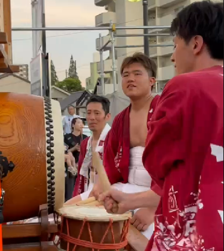

やあどうも皆さんこんにちわ山口でえす。これ何のサイトなのとか思うかもしれないけど、結論何でもございません。ただ山口友貴人という人間が？どういうやつなのか？まあそんなとこをこれから書いていっちゃおうかなと？思ている？次第にございます。まあ趣味の一環ですね、さあ盛り上がっていこうかあ、司町はあああああ？ カリスマぐんだあああああああんそーれあい！あい！あい！あいああああああああああいそー－－れ！！！！！！！！！！

～まんど祭り～
2023年7月29日
私の地元刈谷にはまんど祭りという大きなお祭りがありまして、10年ぶりに友達に誘われて参加してきました。さすがに10年はブランクが、、、と思いましたが小学校のころ体に染みついた太鼓の音色は消えていなく、気持ちよおおおく和太鼓をぶったたかせていただきました。楽しかったなあ!!!